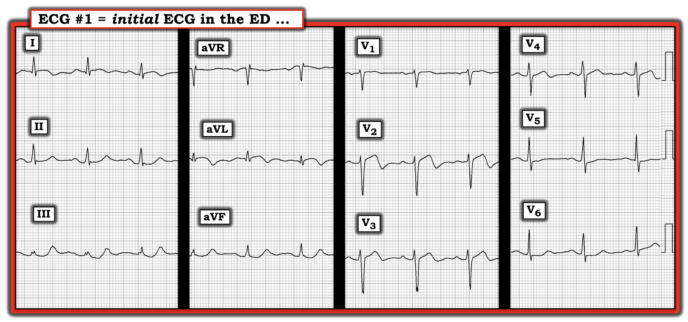
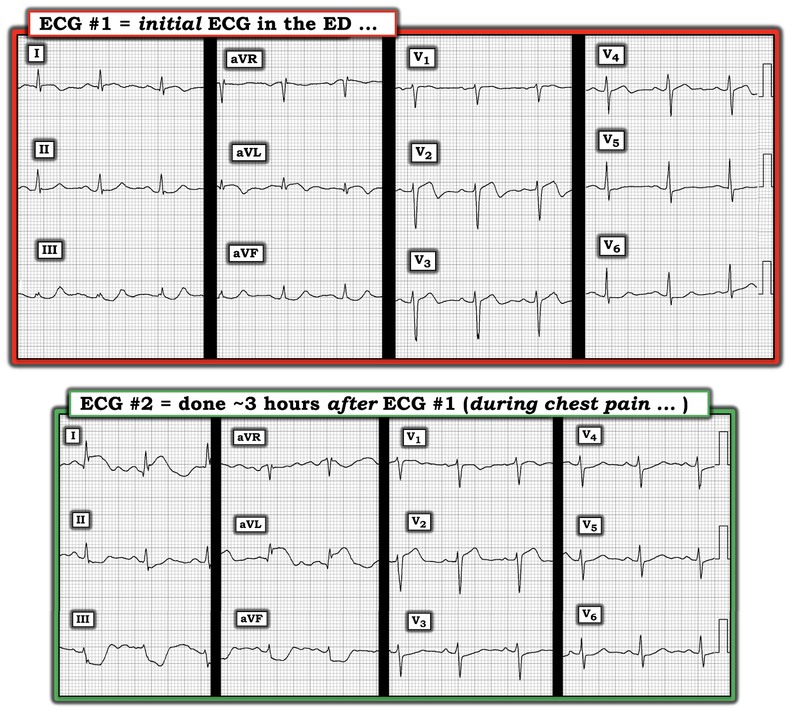
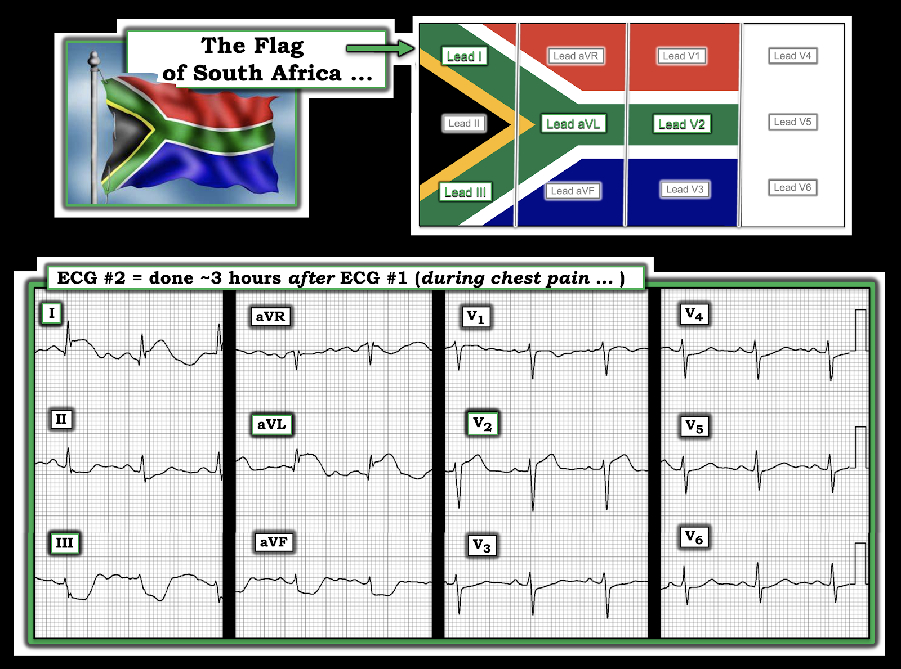
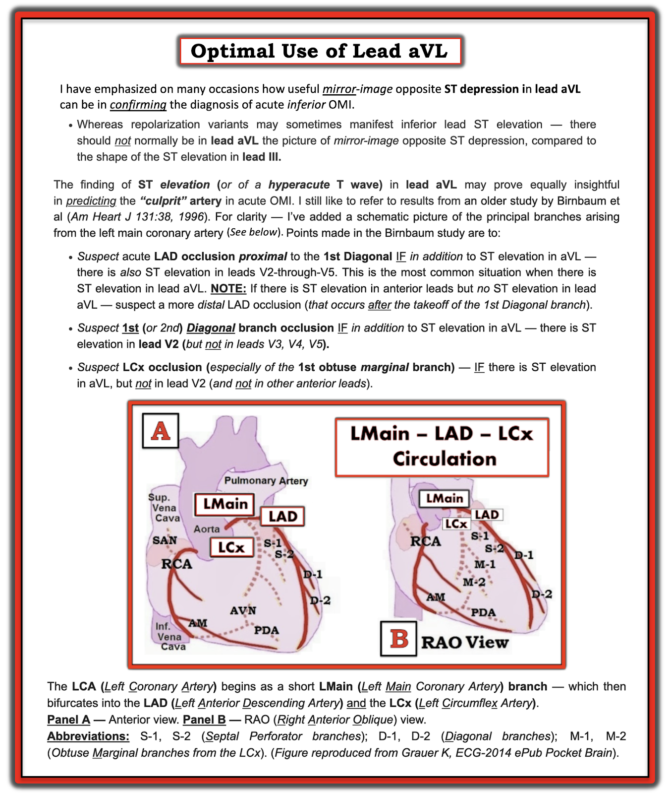

ECG Blog #320 — Không phải động mạch thủ phạm như bạn nghĩ!
Bệnh nhân có điện tâm đồ trong Hình-1 — là một người đàn ông 68 tuổi có các yếu tố nguy cơ, đến viện vì đau ngực dữ dội kéo dài ~1 giờ — nhưng cơn đau đã tự hết vào lúc ông đến ED (khoa Cấp cứu – Emergency Department). Bệnh nhân kể rằng trong tuần trước — ông đã có 2 cơn tương tự đau ngực dữ dội, kéo dài cũng khoảng chừng ấy thời gian rồi tự hết.
- Bệnh nhân hết đau khi đến ED — đó là lúc ghi điện tâm đồ trong Hình-1.
CÂU HỎI:
- Với bệnh sử trên — BẠN sẽ diễn giải điện tâm đồ trong Hình-1 ra sao?
- Về sinh lý — Bạn có thể giải thích điều gì đã xảy ra về mặt giải phẫu để tạo nên hình ảnh điện tâm đồ trong Hình-1 không?
- Có nên kích hoạt phòng thông tim (cath lab) không?


SUY NGHĨ CỦA TÔI về điện tâm đồ trong Hình-1:
Nhịp trong điện tâm đồ #1 là nhịp xoang. Về các khoảng — khoảng PR và thời gian QRS bình thường; QTc có thể kéo dài ở mức giới hạn. Không có lớn buồng tim.
Về Thay đổi Q-R-S-T:
- Có sóng Q chưa rõ ý nghĩa ở các chuyển đạo bên cao I và aVL.
- Tăng tiến sóng R cho thấy vùng chuyển tiếp hơi muộn (sóng R chỉ trở nên cao hơn độ sâu của sóng S ở khoảng giữa chuyển đạo V4 và V5).
Những dấu hiệu nổi bật nhất trong Hình-1 liên quan đến Thay đổi sóng ST-T:
- Đoạn ST có dạng vòm (coved) ở các chuyển đạo bên cao I và aVL. Có vẻ có ST chênh lên đáng kể ở chuyển đạo aVL — xét đến biên độ QRS rất nhỏ ở chuyển đạo này (đó là lý do sóng Q ở chuyển đạo aVL có thể có ý nghĩa). So với biên độ QRS — có sóng T đảo ngược khá sâu và đối xứng ở chuyển đạo aVL. Thay đổi ST-T tương tự cũng thấy ở chuyển đạo I — dù nhẹ hơn.
- 3 chuyển đạo dưới (II,III,aVF) — đều cho thấy thay đổi soi gương (reciprocal) tương tự so với hình ảnh ST-T ở chuyển đạo aVL. (Lưu ý phần dương cuối của sóng T ở cả 3 chuyển đạo dưới — trong đó phần dương cuối của sóng T ở chuyển đạo III còn cao hơn cả sóng R ở chuyển đạo này!).
- Ở các chuyển đạo trước ngực — dấu hiệu nổi bật nhất nằm ở chuyển đạo V2 — với đoạn ST thẳng đuỗn — kèm ST chênh lên tại điểm J 1 mm — và một sóng T hai pha rõ rệt, sóng T đi xuống nhanh thành phần cuối âm.
- Sóng ST-T ở chuyển đạo V3,V4 trông giống nhau — ở chỗ mỗi chuyển đạo đều có đoạn ST thẳng đuỗn (nhưng không chênh lên) — và thoáng có phần cuối sóng T âm.
- Các chuyển đạo V5,V6 trước ngực bên cũng trông giống nhau — và cho thấy đoạn ST thẳng đuỗn, kèm ST chênh xuống nhẹ.
- NHẬN ĐỊNH: Bệnh sử trên, cùng với hình ảnh của điện tâm đồ ban đầu trong ca hôm nay — minh hoạ bức tranh "kinh điển" của hội chứng Wellens (Wellens' Syndrome).
Hội chứng Wellens là gì?
Ý nghĩa lâm sàng của hội chứng Wellens — là khi nhận ra nó, bạn biết rằng bệnh nhân có hẹp động mạch vành LAD (động mạch liên thất trước – Left Anterior Descending) mức độ nặng, nhiều khả năng kèm huyết khối "nóng" có xu hướng cao lan rộng và/hoặc gây tắc hoàn toàn LAD vào bất kỳ thời điểm nào (kể cả ngay lập tức). Dù vậy — hội chứng Wellens vẫn là một thực thể lâm sàng bị hiểu sai và thường bị chẩn đoán nhầm. Để cho rõ ràng — hãy xem các đặc điểm MẤU CHỐT về lâm sàng và điện tâm đồ giúp xác lập chẩn đoán hội chứng Wellens:
- Phải có tiền sử đau ngực trước đó và cơn đau đã hết vào lúc ghi điện tâm đồ dùng để xác định chẩn đoán.
- Troponin tăng không quá mức tối thiểu (nếu có tăng).
- Không có sóng Q nhồi máu mới.
- Có thể có ST chênh lên nhẹ (nhưng không nhiều) ở một hoặc nhiều chuyển đạo trước ngực.
- Có sóng T hai pha đặc trưng, sóng T đi xuống nhanh thành phần cuối âm ở một hoặc nhiều chuyển đạo trước ngực (thường gặp nhất ở chuyển đạo V2 và/hoặc V3 và/hoặc V4).
Hội chứng Wellens KHÔNG phải là gì:
Hiểu lầm lớn nhất liên quan đến việc hội chứng Wellens không phải là gì! Cách tốt nhất để tránh hiểu lầm này là nắm được sinh lý bệnh của hội chứng. Về bản chất — hình ảnh sóng T hai pha đặc trưng với phần cuối âm phản ánh một sóng T tái tưới máu! Bệnh nhân vừa bị tắc LAD hoàn toàn trong một khoảng thời gian ngắn — nhưng nay đã tái tưới máu tự phát.
- Đau ngực cần có theo định nghĩa hội chứng Wellens đã xảy ra vào lúc động mạch vành bị tắc. Nhưng lý do định nghĩa hội chứng Wellens đòi hỏi bệnh nhân phải hết đau vào lúc ghi điện tâm đồ xác định chẩn đoán — là vì tổn thương LAD "thủ phạm" nay đã thông. NẾU tổn thương LAD "thủ phạm" vẫn còn tắc — thì thay vì là lời cảnh báo một nhồi máu sắp xảy ra (đó chính là mục đích của việc nhận ra kịp thời hội chứng Wellens) — sẽ là nhồi máu cấp đang diễn ra.
- Troponin tăng không quá mức tối thiểu (nếu có tăng) — vì thời gian tắc động mạch vành quá ngắn nên tổn thương cơ tim chỉ ở mức tối thiểu. NẾU troponin tăng nhiều hơn — điều này hàm ý tổn thương cơ tim đáng kể đã xảy ra (theo định nghĩa, điều đó nghĩa là bạn đang đối mặt với một nhồi máu đã hoàn tất — và không phải hội chứng Wellens).
- Cũng vì lý do đó — không được có sóng Q (hoặc QS) nhồi máu mới.
- ST chênh lên không quá mức nhẹ — vì hội chứng Wellens không phải là STEMI (tức là, nó không phải là nhồi máu cơ tim "ST chênh lên").
- Thay vào đó — sóng T hai pha đặc trưng với sóng T đi xuống nhanh thành phần cuối âm chính là dấu hiệu cho thấy LAD đã từng bị tắc hoàn toàn trong thời gian ngắn, và nay đã tái tưới máu. Dấu hiệu điện tâm đồ này chính là một sóng T tái tưới máu. Nó có thể trông y hệt hình ảnh ST-T sau một STEMI có troponin tăng nhiều mà nay đã tái tưới máu (dù tái tưới máu này là tự phát — hay nhờ điều trị bằng PCI hoặc thuốc tiêu sợi huyết).
- Về lâm sàng — nguy cơ mà hội chứng Wellens đặt ra — là nó chứng minh rằng đã có tắc cấp LAD do huyết khối, dù trong thời gian ngắn và sau đó mạch tự thông lại. Nhưng mạch nào đã tự tắc rồi thông lại — thì có nguy cơ cao sẽ tự tắc lần nữa (không có gì bảo đảm rằng lần tắc sau mạch sẽ lại tự thông).
- CẢNH BÁO: Cần thận trọng khi chẩn đoán hội chứng Wellens (nếu có) ở bệnh nhân có LVH rõ và thay đổi ST-T kiểu "tăng gánh" thất trái (LV strain). Đó là vì dấu hiệu tăng biên độ QRS trên điện tâm đồ, đi kèm với vùng chuyển tiếp đột ngột ở các chuyển đạo trước tim từ phức bộ QRS chủ yếu âm sang chủ yếu dương — có thể tạo ra hình ảnh ST-T y hệt sóng T hai pha có phần cuối âm đặc trưng của thay đổi Wellens (Xem ECG Blog #209 và Blog #254 và Blog #309 — để xem một số ví dụ về hình ảnh Wellens "dương tính giả" này).
===================================
DIỄN TIẾN CỦA CA:
Các thay đổi điện tâm đồ của hội chứng Wellens nói trên đã không được nhận ra. Hậu quả là — không tiến hành thông tim, và bệnh nhân được nhập viện với chẩn đoán "đau thắt ngực không ổn định".
- Khoảng 3 giờ sau khi ghi điện tâm đồ #1 — bệnh nhân lại có một cơn đau ngực dữ dội khác. Điện tâm đồ thứ 2 được ghi vào lúc đó (Bản ghi phía dưới trong Hình-2).
CÂU HỎI:
- Với diễn tiến này — BẠN sẽ diễn giải điện tâm đồ ghi lại trong Hình-2 ra sao?
- Về sinh lý — Bạn có thể giải thích điều gì đã xảy ra về mặt giải phẫu để tạo nên hình ảnh điện tâm đồ trong Hình-2 không?
- Lúc này có nên kích hoạt phòng thông tim không?


SUY NGHĨ CỦA TÔI về điện tâm đồ ghi lại:
So với điện tâm đồ ban đầu ghi trước đó 3 giờ — mức độ lệch đoạn ST đã tăng rõ rệt ở một số chuyển đạo của điện tâm đồ #2. Các dấu hiệu điện tâm đồ cụ thể trên bản ghi lặp lại này trong Hình-2 gồm:
- Nay có ST chênh lên rất rõ ở chuyển đạo I và aVL. Kèm theo là sóng q nhỏ ở các chuyển đạo bên cao này.
- Có ST chênh xuống soi gương rõ rệt không kém ở các chuyển đạo dưới. Đáng chú ý — mức ST chênh xuống soi gương tương đối ở chuyển đạo III — tương đương với hình ảnh đối nghịch như soi gương của ST chênh lên cực độ ở chuyển đạo aVL. Cũng đáng chú ý — là đã không còn phần cuối dương của sóng T ở các chuyển đạo dưới.
- Ngoài chuyển đạo I và aVL — ST chênh lên trên điện tâm đồ #2 cũng thấy ở chuyển đạo V2. So với hình ảnh ST-T ở chuyển đạo V2 của điện tâm đồ #1 — nay ST chênh lên nhiều hơn — và không còn phần cuối sóng T âm.
- Không thấy ST chênh lên ở bất kỳ chuyển đạo trước ngực nào khác. Thay vào đó — có ST dẹt và chênh xuống nhẹ ở các chuyển đạo V3 đến V6 của điện tâm đồ #2.
ĐIỂM THEN CHỐT (PEARL) #1: Phân bố của độ lệch ST:
Điện tâm đồ ghi lại trong ca hôm nay gợi nhớ đến kiểu phối màu của Quốc kỳ Nam Phi (South African Flag) — ở chỗ các chuyển đạo có thay đổi ST-T nổi bật nhất trên điện tâm đồ #2 là chuyển đạo I, III, aVL và V2 — tương ứng với cách bố trí phần màu XANH LÁ trong chữ "Y" nằm ngang của quốc kỳ Nam Phi (phần trên cùng của Hình-3).
- Hình ảnh điện tâm đồ có ST chênh lên chỉ giới hạn ở chuyển đạo V2 trong các chuyển đạo trước ngực (với ST chênh xuống ở các chuyển đạo trước ngực khác) — khi đi kèm ST chênh lên ở chuyển đạo aVL (và đôi khi ở chuyển đạo I) — nên gợi ý tắc cấp động mạch vành ở một trong hai: nhánh chéo thứ 1 hoặc thứ 2 của LAD.
- ĐIỂM THEN CHỐT (PEARL) #2: Đôi khi khó phân biệt ở giai đoạn sớm giữa OMI cấp (nhồi máu cơ tim do tắc – Occlusion-based Myocardial Infarction) của nhánh chéo thứ 1 hoặc thứ 2 — với tắc LAD đang diễn ra mà ST chênh lên chưa kịp tiến triển sang các chuyển đạo trước ngực khác ngoài V2. Điều này thực sự có liên quan về lâm sàng với ca hôm nay — vì nó nhấn mạnh tầm quan trọng của việc biết rằng khi tắc cấp nhánh chéo thứ 1 hoặc thứ 2 của LAD — ta chỉ nên chờ đợi duy nhất 1 chuyển đạo trước ngực này có ST chênh lên.


DIỄN TIẾN CỦA CA:
Các bác sĩ điều trị đã nhận ra STEMI cấp rõ ràng trên điện tâm đồ #2. Bệnh nhân được điều trị thành công bằng thuốc tiêu sợi huyết.
Tổng Hợp Lại Tất Cả:
Trong số những điểm quan trọng mà ca hôm nay nhấn mạnh — là sự cần thiết phải nhận biết một hội chứng Wellens "thực sự". Như đã nêu ở trên — hình ảnh ST-T của chuyển đạo V2 trên điện tâm đồ #1 đáp ứng hoàn hảo các tiêu chuẩn, ở bệnh nhân này có các cơn đau ngực dữ dội trước đó đã tự hết (và bệnh nhân hết đau vào lúc ghi điện tâm đồ #1).
- Sóng T hai pha có phần cuối âm ở chuyển đạo V2 của điện tâm đồ #1 — là bằng chứng của tái tưới máu tự phát sau tắc động mạch vành trong thời gian ngắn.
- Tương tự — sóng T đảo ngược ở chuyển đạo aVL (và ở mức độ ít hơn, ở chuyển đạo I) của điện tâm đồ #1 cũng phản ánh tái tưới máu tự phát.
- Lý do sóng T ở các chuyển đạo dưới trên điện tâm đồ #1 cao đến vậy — là vì thay đổi soi gương ở các chuyển đạo này biểu hiện hình ảnh đối nghịch như soi gương với sóng T đảo ngược do tái tưới máu ở chuyển đạo aVL.
- ĐIỀU CẦN NHỚ: Cơn đau ngực đã tự hết vào lúc bệnh nhân trong ca hôm nay đến ED — là cơn "cảnh báo" thứ 3 mà bệnh nhân gặp trong vòng 1 tuần. Không may — mạch "thủ phạm" đã không tự thông lại ở cơn thứ 4, dẫn đến STEMI rõ ràng trên điện tâm đồ #2. Điều này nhấn mạnh sự cần thiết phải nhận ra hội chứng Wellens như một chỉ định thông tim kịp thời, nhằm ngăn ngừa một nhồi máu diện rộng.
ĐIỂM THEN CHỐT (PEARL) #3: Mọi trường hợp hội chứng Wellens mà tôi biết — đều liên quan đến một tổn thương hẹp nặng của động mạch vành LAD. Thêm một lý do khiến ca hôm nay trở nên rất sâu sắc — là nó cho thấy hội chứng Wellens cũng có thể là dấu hiệu của tổn thương hẹp nặng ở nhánh chéo thứ 1 hoặc thứ 2 của LAD, chứ không phải ở chính LAD.
- Nhận ra dấu hiệu Quốc kỳ Nam Phi có thể quan trọng về lâm sàng! Tôi biết một ca trong đó bác sĩ can thiệp chỉ phát hiện ra tắc cấp nhánh chéo thứ 2 — là nhờ một điện tâm đồ giống như trong Hình-3 đã thôi thúc anh ấy xem kỹ hơn phim chụp mạch để tìm chỗ tắc đoạn gần vốn không thấy rõ lúc đầu.
ĐIỂM THEN CHỐT (PEARL) #4: Tôi rất thích chuyển đạo aVL! Tôi tóm tắt trong Hình-4 — giá trị lâm sàng của chuyển đạo này trong việc dự đoán động mạch "thủ phạm" ở OMI cấp.


==============================
Điểm Nâng cao (Vượt ra ngoài phần cốt lõi): Trong những năm gần đây — việc đối chiếu MRI với giải phẫu tim, phân bố động mạch vành và các dấu hiệu điện tâm đồ đã cho thấy thuật ngữ điện tâm đồ truyền thống không chính xác như từng nghĩ (Bayes de Luna và cs.: Circulation 114:1755, 2006). Như vậy, về quan hệ giải phẫu, thành sau của thất trái — trên thực tế không nằm "phía sau" trực tiếp như ta vẫn nghĩ.
- Cái mà theo truyền thống vẫn được xem là tổn thương thành “sau” — nói chính xác hơn là tổn thương một phần thành bên thất trái.
Một hệ thuật ngữ mới, chính xác hơn về giải phẫu, đã được đề xuất:
- Thuật ngữ mới sẽ đổi cách gọi thành sau thất trái — sang gọi là thành bên .
- Đối chiếu MRI cũng gợi ý rằng việc xếp chuyển đạo aVL là chuyển đạo “bên cao" là không chính xác về giải phẫu. Thay vào đó, dấu hiệu điện tâm đồ có sóng Q nhồi máu ở chuyển đạo aVL và/hoặc chuyển đạo I — nhưng không có sóng Q ở chuyển đạo V6 — chỉ ra nhồi máu cơ tim thành trước-giữa chứ không phải tổn thương “bên cao". Đây là cơ sở cho những gì trình bày ở trên trong Hình-4 về lý do chuyển đạo aVL rất hữu ích trong việc định khu động mạch "thủ phạm"!
- THIÊN KIẾN CỦA TÔI: Dù nhận thức được lợi ích tiềm năng to lớn mà đối chiếu MRI có thể mang lại cho việc định khu giải phẫu chính xác hơn — thuật ngữ điện tâm đồ truyền thống hiện nay dường như đã ăn sâu bám rễ. Thay vì làm rối vấn đề bằng một hệ thuật ngữ điện tâm đồ mới chưa được dùng rộng rãi — Chúng tôi ủng hộ tiếp tục dùng thuật ngữ nhồi máu thành sau (vẫn tiếp tục phân biệt thành bên với thành sau của tim) — và tiếp tục mô tả chuyển đạo aVL là chuyển đạo “bên cao". Chúng tôi hoàn toàn thừa nhận rằng vào một lúc nào đó trong tương lai — việc thuật ngữ dựa trên đối chiếu MRI được chấp nhận rộng rãi hơn có thể thay đổi cách chúng ta định khu các vùng giải phẫu trên điện tâm đồ.
=======================================
Lời cảm ơn: Xin cảm ơn Kianseng Ng và Paul Ling (từ Malaysia) đã chia sẻ ca bệnh và bản ghi này.
=======================================
Các bài ECG Blog liên quan đến ca hôm nay:
- ECG Blog #205 — Ôn lại Cách tiếp cận hệ thống của tôi trong đọc điện tâm đồ 12 chuyển đạo (được phác thảo trong Hình-2 và -3, và là chủ đề của Audio Pearl MP-23 trong Blog #205).
- ECG Blog #209 và ECG Blog #254 và ECG Blog #309 — Ôn lại các ca LVH rõ gây ra thay đổi ST-T tương tự như có thể thấy trong hội chứng Wellens (nhưng không phải là hội chứng Wellens!).
- Xem Bình luận của tôi ở cuối trang trong bài đăng ngày 18 tháng 1 năm 2025 trên Dr. Smith's ECG Blog — để ôn lại Dấu hiệu Quốc Kỳ Nam Phi!
==================================
PHẦN BỔ SUNG (16/7/2021): Trong 2 Hình sau đây — tôi đăng phần tóm tắt từ ECG-2014-ePub của tôi về Hội chứng Wellens.
- BẤM VÀO ĐÂY — để xem bản PDF của tệp 3 trang về hội chứng Wellens này, xuất hiện trong Hình-3 và Hình-4.


Audio PEARL #26a (7:40 phút) — Ôn lại Hội chứng Wellens là gì — và không phải là gì (trích từ ECG Blog #254).